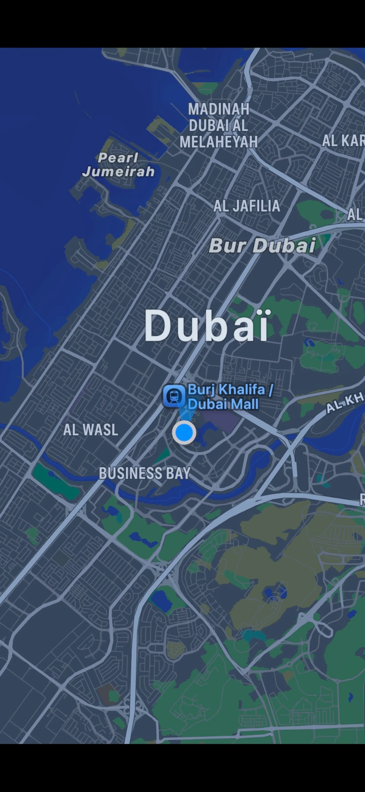
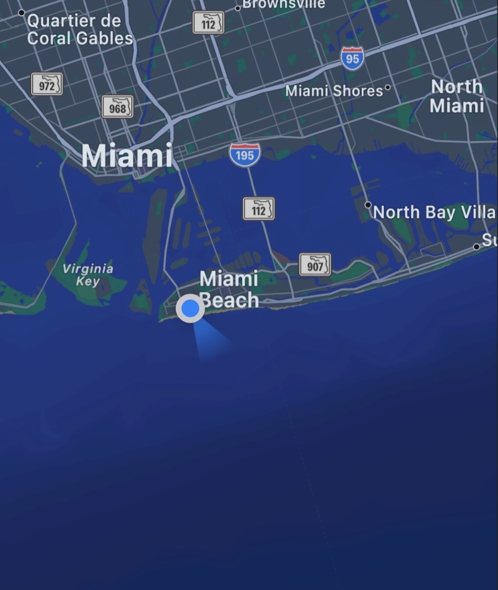
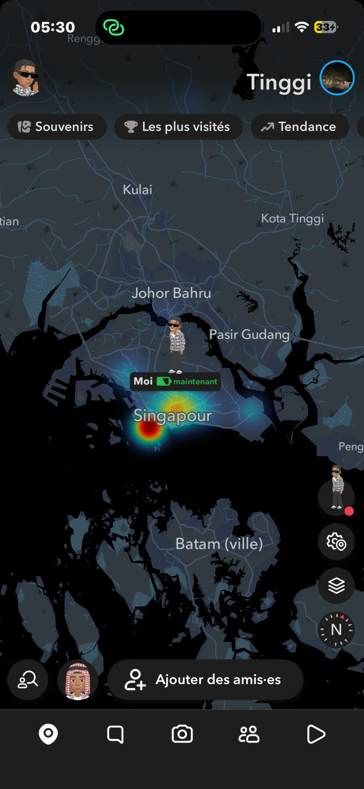
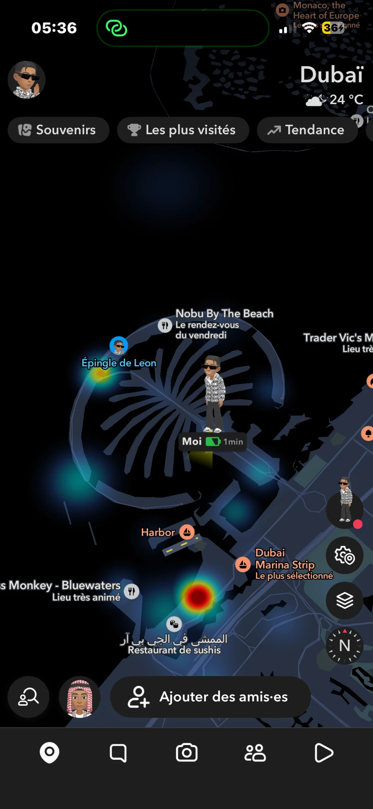

Rends fous tes potes en changeant ta loc en 1 clic
Flexloc change la loc que ton téléphone partage avec tes apps
Choisis ta destinationMarche sur
 Apple
Apple- Android
 Snapchat
Snapchat Instagram
Instagram
Flexloc change la loc que ton téléphone partage avec tes apps
Choisis ta destinationMarche sur




Tu choisis un point sur la carte et tes amis te voient là-bas en direct.
Le seul site qui te met vraiment à la loc que tu souhaites et qui y reste.
Paiement sécurisé. Ton compte s'active à la seconde où c'est validé.
Sur Android tu installes l'app, elle te guide écran par écran, et c'est parti depuis ton tel. Sur iPhone : un bouton dans ton espace t'envoie l'app Flexloc directement sur ton tel.
Tu ouvres l'app, tapes où tu veux être sur la carte, tu lances. Et voilà ta loc t'affiche sur les plus beaux spots de la planète – Dubaï, Tokyo, Miami – comme si tu y étais. Tu mets ton tel dans ta poche et ta loc reste à la même place.
Notre technologie tient un nombre de places limité par mois, elle est plafonnée pour rester fluide et propre pour chacun. Quand les places sont prises, c'est fermé. Et la tienne part à quelqu'un d'autre. Là il en reste 7. Prends la tienne pendant qu'elle est encore disponible.